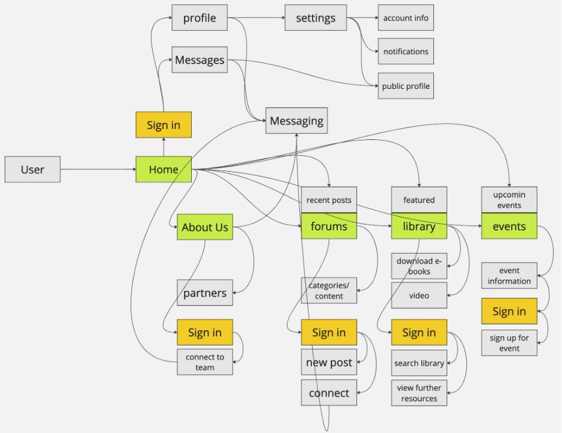
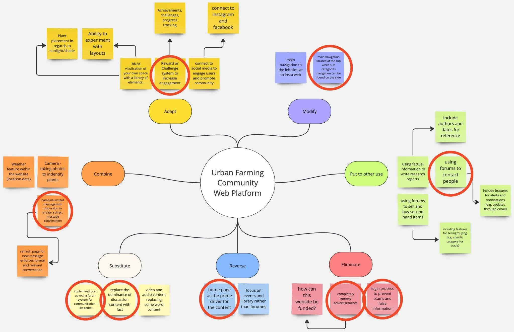
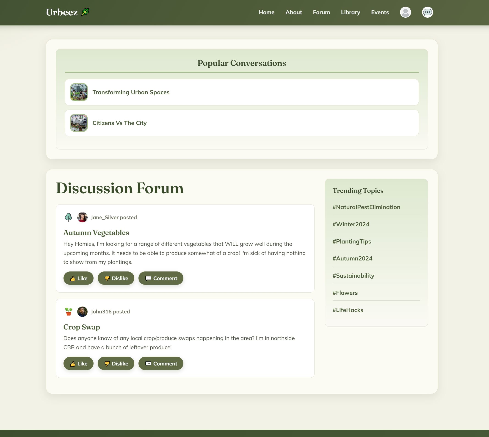
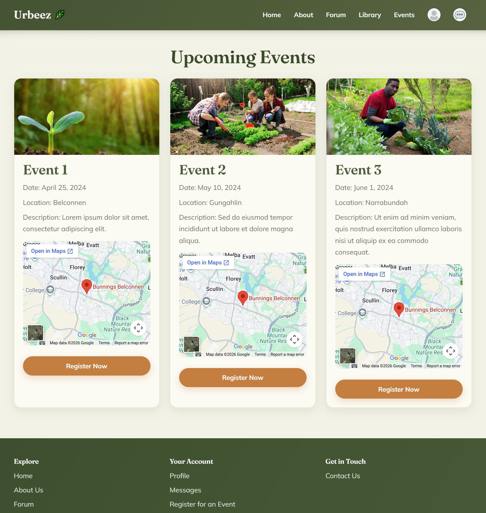

Urbeez: Urban Gardening Community Platform
A coded prototype for an urban farming platform that pairs reliable horticultural information with an active community forum. Designed, tested, and built with Jonathan Stahl for Designing for UX at the University of Canberra.

The challenge
The brief asked for a web platform that supports people interested in urban farming, with information, tools, and networking in one place. Looking at the existing options, users had to pick a side. Facebook urban gardening groups offered community but no way to check if the advice was reliable. Growcycle offered trustworthy information but no community at all. The challenge was to give users both.
Three things made it harder than a normal community site:
- One platform had to serve experienced urban farmers and curious beginners side by side.
- The information had to feel trustworthy, and the community had to feel safe enough to ask basic questions.
- Users with low confidence in technology had to find the site easy from the first visit.
Ideation
Ideation was the centre of this project. Research into existing platforms and users fed straight into an information architecture map and a SCAMPER brainstorm, which together shaped every feature that made it into the prototype.
Research
- Built two personas from interviews with members of an urban farming Facebook group, one experienced, one new to urban farming.
- Studied Facebook groups and Growcycle to see what each got right, and what each missed.
- Mapped each persona's journey through the site to find friction before the design started.
Ideation
- Mapped the information architecture so the forum, library, and events live alongside each other, not buried in separate corners.
- Used SCAMPER to brainstorm features the existing platforms didn't have, including the badge system and direct messaging.
- Picked a warm, earthy colour and font system so less confident users would feel at home.
Build and test
- Coded the high-fidelity prototype in HTML, CSS, and JavaScript.
- Ran think-aloud usability tests with five participants aged 17 to 56, alongside the System Usability Scale.
- Both trials averaged in the mid-70s on the SUS, with no usability drop as participants got older.
Information architecture

SCAMPER brainstorm

What I delivered
- A coded mobile-first prototype. Seven pages built end to end. Home, About, Forum, Library, Events, Profile, and Messages.
- A badge and reputation system. Plant-stage icons that grow with each user, so readers can see at a glance whose advice to trust.
- A platform that tested well across ages. Both usability trials averaged 74+ on the SUS, with one tester saying, "OMG the whole thing is so cozy!"

